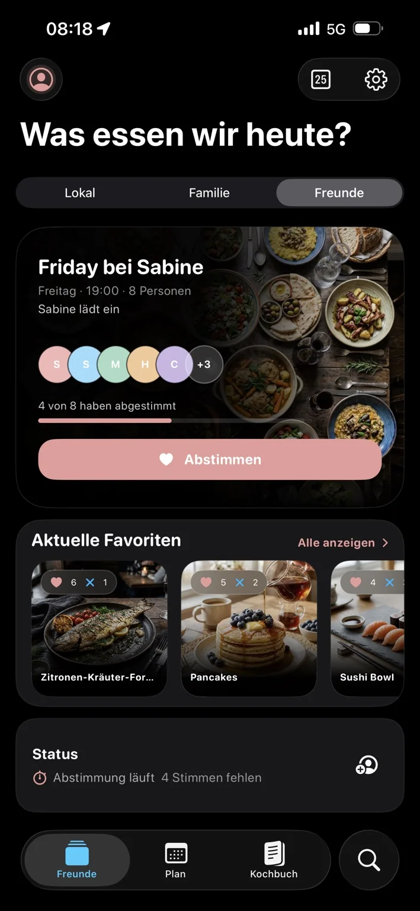
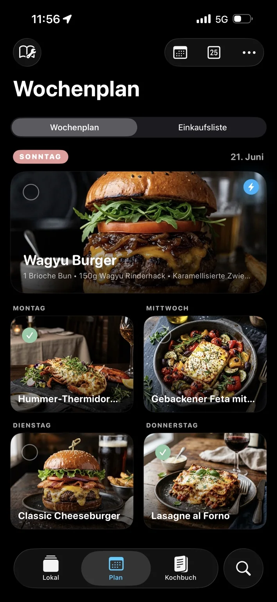
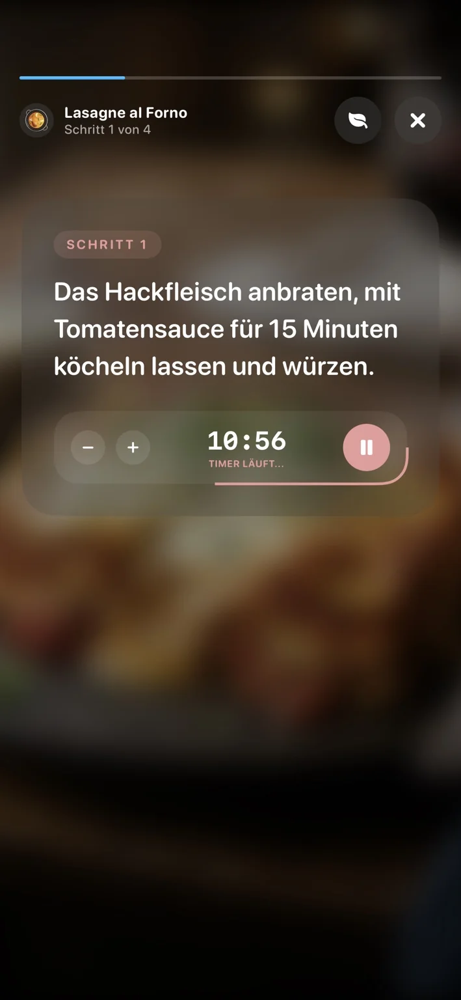
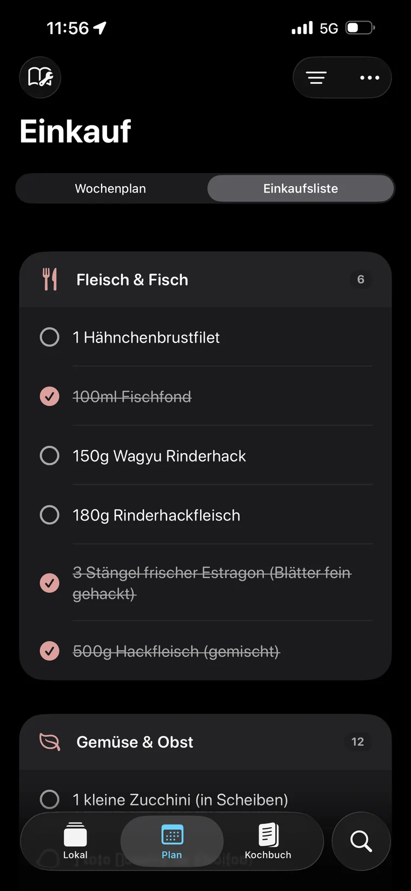
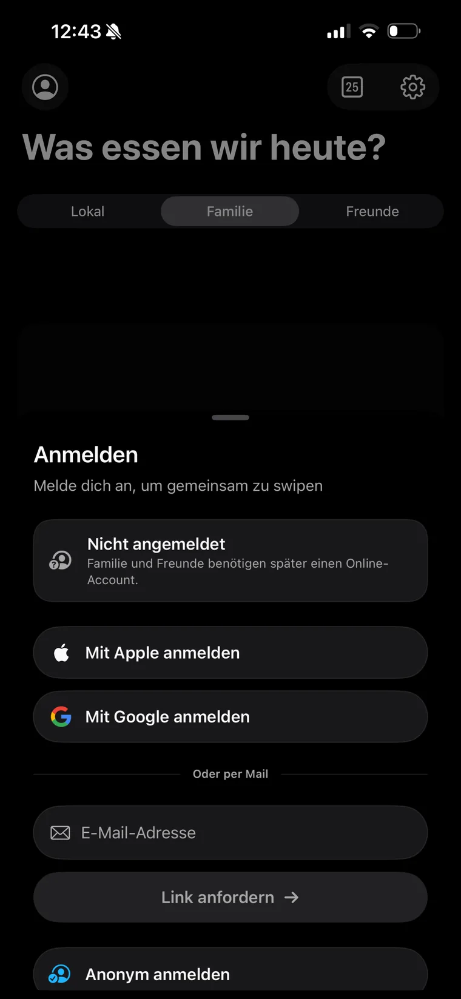
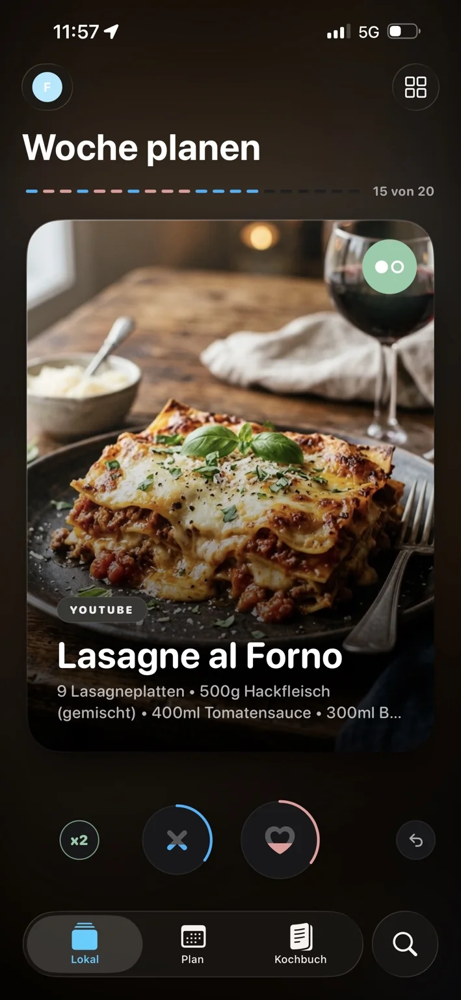
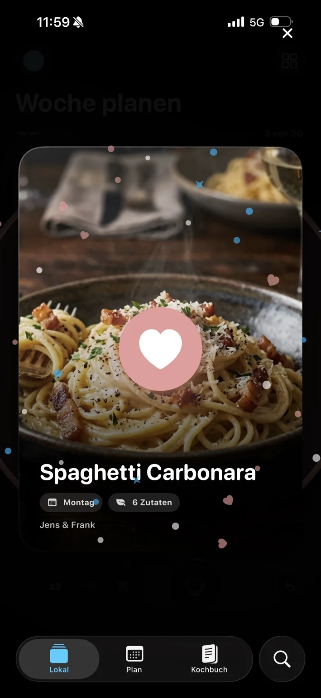
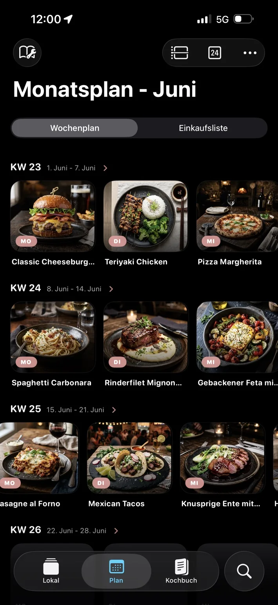
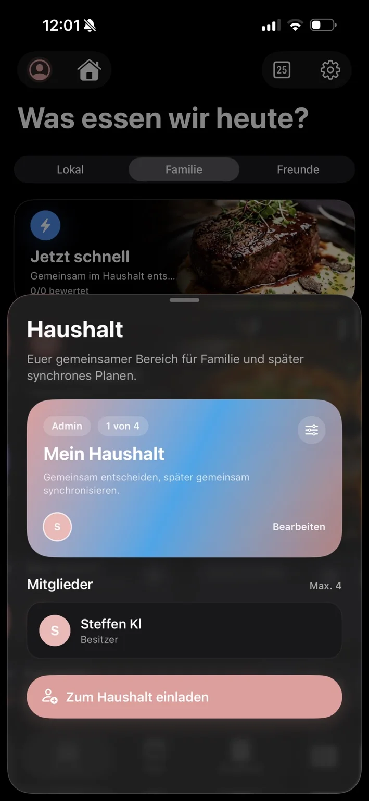

Envie verbindet Rezeptimport, gemeinsames Entscheiden, Wochenplanung, Einkauf und Kochen zu einem einzigen, konsequenten Produktfluss — lokal auf dem Gerät, oder live im Haushalt.



Rezepte sind überall. Entscheidungen dauern. Planung passiert im Kopf. Einkauf und Kochen sind separate Werkzeuge — und keine Entscheidung ist wirklich gemeinsam.
Rezepte verschwinden in Chats, Browser-Tabs, Screenshots und PDFs — ohne Struktur, ohne Wiederfindbarkeit.
Ein Like ist noch keine gemeinsame Entscheidung. WhatsApp-Abstimmungen enden im Chaos.
Nach der Entscheidung beginnt die eigentliche Arbeit erst: Einkaufsliste, Zutaten, Kochen — alles von vorne.


Fünf Stationen — eine durchgängige Nutzererfahrung ohne Medienbruch.
Kamera, PDF, Web-Share oder Action-Extension — Vision OCR + Foundation Models.
Strukturierte Alben, Hero-Karussell, tägliche Entdeckungen — SwiftData on-device.
Quick · Woche · Endlos · Friends — drei soziale Scopes, ein Swipe-Erlebnis.
Matches landen direkt im Wochenplan. Einkaufsliste dedupliziert und kategorisiert.
Step-by-Step Begleitung, Timer, Live Activity in Dynamic Island und Sperrbildschirm.
Erster Match belegt sofort den Tag — Session endet.
Matches füllen freie Wochentage bis die Zieltage belegt sind.
Geschmack sammeln — kein automatischer Planwrite.
Envie trennt Zustimmung von Planwirkung. Erst ein kontextuell gültiger gemeinsamer Treffer wird transaktionssicher in den Wochenplan geschrieben.
Personengebundene Freigabe — kein Plan-Eintrag.
Quick / Woche / Family / Friends — jeder Kontext hat eigene Planlogik.


Woche, Monat und Einkaufsliste sind keine Zusatzmodule — sondern die direkte Fortsetzung der Entscheidung. Zutaten werden dedupliziert, Supermarktkategorien zugeordnet, Family-Haken in Echtzeit synchronisiert.

Großformatige Schritt-für-Schritt-Karten, persistierter Kochstand und Live Activity im Dynamic Island — der Kochmodus verschwindet im Hintergrund, nicht im Weg.
Vision-OCR liest, Apple Foundation Models ordnen, die Review-Ansicht hält den Nutzer in Kontrolle — vollständig on-device, keine Cloud-API, keine Kosten pro Import.
Share- und Action-Extension. Jede Quelle, die iOS kennt.
Texterkennung direkt auf dem Gerät. JSON-LD-Parser für Web-Shares.
On-device Apple Intelligence: Zutaten, Schritte, Metadaten. Regex-Fallback.
ImportReviewView: prüfen, korrigieren, lokal in SwiftData sichern.
Kein Account für die Basisnutzung. Firebase greift erst bei Haushalt oder Freundesrunden — mit getrennten Daten- und Reaktionspfaden.

Jeder Teilnehmer bewertet Stacks im Grid. Like = nominiert. Veto = für alle gesperrt. Ballots werden gebündelt an Firestore übertragen.
Verbliebene Finalisten aus Phase 1 im gewohnten Swipe-Format. Like oder Pass — schnell und eindeutig.
Stimmengewinner steht sofort fest. Bei Gleichstand entscheidet ein stabiler Seed-Algorithmus — kein Live-Lärm, keine endlose Diskussion.
Weitgehend in spezialisierte Dateien zerlegt. Komplexitätsschwerpunkte bleiben bewusst sichtbar.
Envie ist fachlich und cloudseitig integriert. Vor dem Launch: App-Check-Enforcement, Multi-Device-Tests und Accessibility-Politur.